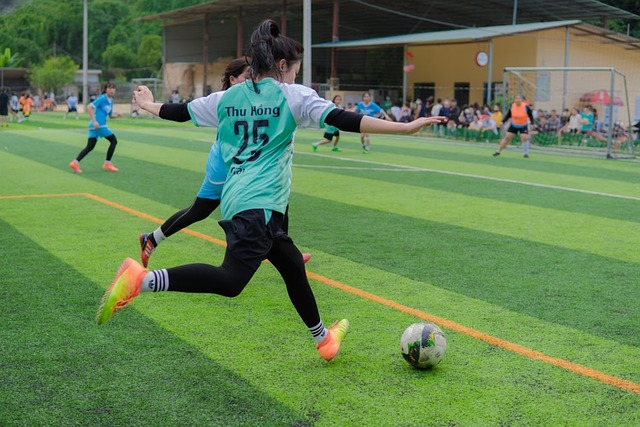

Mi página web
Hola bienvenidos a mi blog soy Yasmine estudiante de 2º Bachillerato y alumna de TIC2 en el IEDA
MIS AFICIONES
DEPORTE
Juego al fútbol en la Liga Femenina de Deporte y Naturaleza con el equipo Atlético del Mar.
Es una actividad que disfruto tanto por el deporte en sí como por el compañerismo que genera.
ARTE
Me interesa el arte en diversas formas: disfruto dibujar, pintar, explorar esculturas y hacer manualidades.
LECTURA
Me apasionan la lectura y la escritura, dos formas de explorar ideas, contar historias y conectar con diferentes perspectivas.
|  |

|

|
Dale click aquí para visitar mi blog de TIC
Dale click aquí para visitar mi Twitter